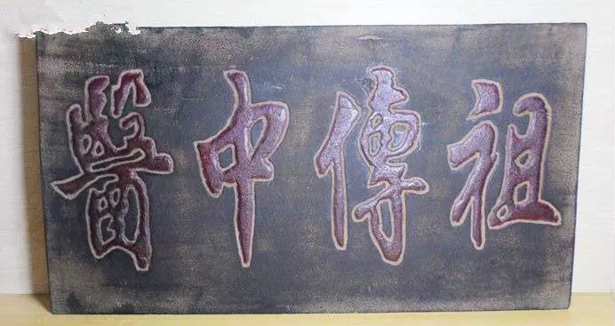
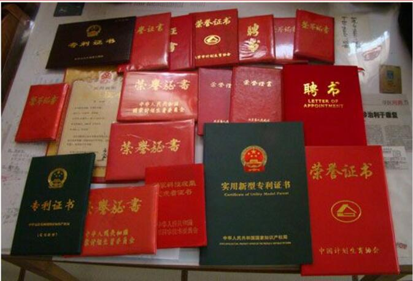
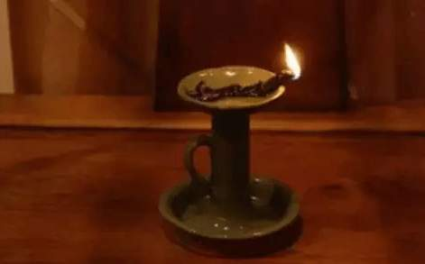

关闭
加索老团队微信，做回威猛男人

微信号： zt998801←(长按复制)
2018年03月10日 08：01：43
来源：39健康网-健康 23423人参与 3121评论
“补肾疯子”老中医有3怪！第1怪：不信他者不接待；第2怪：看面观舌不把脉；第3怪：病症越重起效快！
老中医，继承祖辈秘方， 被誉为“补肾疯子”，专补男人肾！
只要你是男人，不管你阳痿，早泄，时间有多短，长度有多小，用他的强肾方，让你增大增粗坚挺30分钟以上，夜夜征服老婆，飘飘欲仙！
他，面对媒体敢于公开宣称：
你担心有副作用，随便拿去化验，老中医每天都要去门诊出诊，里面加有西药，我赔你十万！我再自己把门上的招牌给砸了！

跟笔者说这些话的人，正是我们今天的主人公。他家祖辈为皇家配制的秘方，秘方传到现在，经过不断加以改进，解决肾虚，阳痿，早射。组方几乎完美！每天诊断上百人解救了无数难以启齿、垂头丧气的男人；他和网友畅聊男性如何补肾、养肾，受到强力追捧，他自称为“补肾疯子”，一辈子就看男人那点事。
我专门针对男人问题，不管你阳痿，早射还是想增大增粗，7天让你坚挺起来
再一个，男人不行是一个非常广泛的疾病范畴，会出现很多糟糕的疾病。用我的方法，不仅解决男人不行的问题，顺带把他引起很多的病，比如尿频尿急，白发脱发，失眠健忘，腰腿酸软乏力……这些病也能得到很彻底的治疗。这叫全面恢复。
所以说，中国人补肾，还是得用针对中国人的方法！有把握我就为你开方，无把握你也不受损失。

老师出生于中医世家。自幼随父亲学习中医，8岁就熟读《本草纲目》、《脉理》、《药性900味》，长大后父亲又教他《伤寒论》、《金匮要略》、《温病论》等医家经典，16岁就开始随父行医：“医生如果连自己都保养不好，你怎么给别人治病？肾乃先天之本，肾好自然老的慢，不管什么肾虚，归肾丹阳疗法，必须给你拽回来，否则我自砸招牌！”
现在社会，节奏快、压力大，十个男人九个虚，力不从心的男人十分普遍，盲目进补的特别多，这点老中医非常担心：“人参是好东西，用的巧能起死回生，用不好也能让人一命呜呼，不同的男人不同的补法，就像过去的油灯，灯不亮了，有的是没油了要加油，而有的油是满的，只需要把灯芯拔一拔！你是肾的问题还是睾丸的问题，不能瞎补，弄不好就是吹灯拔蜡！”

一天，老中医同时接诊三个男性，都是力不从心，在爱人面前抬不起头。老中医却开出三张不同的处方。三人是一个单位的，拿到处方一比对，顿生疑问：为什么咱三病情差不多，但方子却千差万别？面对他们的疑虑，老中医问第一个人：“你是不是耳鸣头晕、烦燥发热、睡眠不好？”病人点点头；问第二个病人：“你是不是动则气喘、手脚发凉、容易掉头发？”病人连声说是；问第三个病人：“你是不是经常起夜、尿频尿急、会阴坠胀？”病人心中暗暗称奇。
老中医笑着说：“虽然都是虚，但你们的症状不一样。第一位是‘阴虚’，第二位是‘阳虚’，第三位是典型的‘肾腺积毒’。一个要滋阴、一个要助阳，还一个得排肾器和前列腺的积毒。”
三个月后，病人又一起来了找老中医，直夸神奇，不仅生龙活虎，恢复了精气神，那些症状也都无踪无影了。
老中医：我的丹方都是针对每个人不同特点来调制的！
只选对的，不开贵的！不恐吓患者、不开检查单！——这样的行事风格，使老中医极不适应现有的医疗体制，虽受患者拥戴，却受到院方的批评，从医院到自己独立行医，老中医决定把帝皇强根方推广开来，因独到的医术和行医风格，受到无数男性朋友追捧，每天咨询不绝、不得已老中医让自己的弟子开了微信号，以方便更多求治的朋友！ 老中医高超的医术、炮制丹方的显著疗效以及医者仁心的行医风格。
看舌苔问症状，在线诊断开方，我就是要打破体制的牢笼！
“把你的症状跟我讲一讲”、“把你的舌苔拍个照片给我看看”、“把你的指甲拍个照，我看看上面的半月牙”......这是老中医经常在微信里和网友们互动的话，老中医语重心长的和笔者说：“很多外地患者路途遥远，来去的费用远远比诊疗费用高多了，我从医40余年，对男性调理早已轻车熟路，几个问题、几张照片，我就能把他的脉断的清清楚楚，然后量体裁衣，辩证施治，一个萝卜一个坑、一把钥匙开一把锁，再加上我对中药材的严格挑选和炮制方法，效果绝对立竿见影！”
在采访的几天，笔者发现还是有几个心存疑虑的男性患者，老中医在远程诊断以后，都让学生们做了详细的登记，连夜研究他们的调理方案！“人的体质千差万别，合适的才是最重要的，只要对路，药材选好、炮制到位，效果就会快，我既然对自己有信心，就敢先给他们诊断开方，方子清清楚楚，明明白白？让每一位患者都能放心，安心治疗”“我就是要打破这种体质的牢笼，砸那些不钻研医术，只想先捞捞了钱，再胡乱应付患者的人”
恐怖！当天拉黄尿、臭尿、泡沫尿！ 开心：第二天有大惊喜！
很多男性朋友都说，开始的确只是想试试，找老中医开点方，反正死马当活马医，再说加个医生朋友的微信总归没有害处。
没想到聊过后，没几天收到药后试过，效果真的神奇！吃完后，按老中医的要求，多喝水，两个小时后，就拉出大量黄褐色的泡沫尿，上面漂浮着油腻的白杂质，又腥又臭！连自己都不敢相信，这下半身里面居然这么脏！
跟老中医反馈，老中医说正常现象，人和车一样，车开久了发动机就有积碳，要保养清积碳；我们人也一样，得排出肾、前列腺、海绵体里面的毒，咱以前没试过，排毒反应更明显！不出三天，会有大惊喜！
如果你想治疗阳痿早射，补肾壮阳，增大增粗30分钟。立即咨询老中医，教你如何针对性调补，再试试老中医亲手炮制的秘方，一定有意想不到的惊喜哦。
疾风知劲草，烈火见真金！ 好东西不怕考验！
其实，关于给不行的人免费诊断，其中利弊，老中医比谁都清楚：没有安全和效果的双保险，那就是自讨苦吃、自寻死路！他说：“患者心里都有本帐，他们知道，你要没效果、不安全，你敢接诊吗？你的中医馆还保得住吗？我以前也不敢，后来我看到那么多患者都相互推荐过来，我才知道：疾风知劲草、烈火见真金，好东西不怕考验！”
除了远程给大家诊断外，大部分时间，老中医都和学生在药厂现成监控流程，确保质量，他自己说：“只有自己亲自监控每一个步骤，才能放心，三提八萃的古法通过现代工艺提纯后，效果更好，我希望这种传统技艺不被大家遗忘，能传承下去。”
药材好，药才好！为了保证药材品质，老中医对药材的产地、年份、炮制都非常严格，为了得到道地药材，他每年都会去药材原产地，直接从药农们手里收购。有一次，为了找到最好的沙漠人参——肉苁蓉，老中医跑遍了整个药材市场，都没发现中意的，换着别人，也就将就着用了，可是倔强的老中医硬是坐30多小时的火车，再转汽车，只身一人跑到内蒙古阿拉善盟，找到当地的药农，硬是扛回大包小包的，看着像难民一样的老中医，徒弟们都心疼的流出了眼泪。
有一天，天还未亮，老中医就把徒弟们全部喊起来，一起去湖里采荷叶入药，弟子不解，打着哈欠问：干嘛要这么早去摘？老中医就火了：三月茵陈四月蒿，五月砍了当柴烧！春采花、夏采叶、秋果冬根！即时同样的药材，采摘时辰都有讲究，不懂选材的中医那是狗屁中医！荷叶属阴，要的就是阴凉之气！清晨带露珠的荷叶，经过整夜阴寒，未经太阳照射，寒气最重，效果最佳！徒弟们无不被他那种执着和坚守所感动。
很多添加了老中医微信的男性朋友都反应：刚开始还挺不好意思的，聊着聊着，老中医变成了朋友，“老中医”变成了“老中医”，一个微信最高5000好友，硬是被加满了3个！每天都大量粉丝要老中医帮忙诊诊，看看该如何补虚；有的是想让老中医炮制点丹方试试；更多的是报喜后再要求多配点当长期使用的补品。
“刚开始你不是嫌贵，现在怎么要配这么多？”“那还不是您老开的方子好使，我活了50年，现在才尝到男人的滋味！”“我得给我领导整点，把他伺候好了，年底有望晋升！”“做事还得靠本事啊，不能靠手段。”“老婆现在特别满意，说我不找借口了，准备下半年要二胎。”“恭喜恭喜，也不能过分哦！”“您来厦门，千万千万要给我电话！”“您让我撮谷道、大便咬紧牙关、舌抵上颚，这招真的管用！太牛了！”“给您寄的芒果收到了吧，没坏吧！”…
老中医说：以前的老号都给学生打理了，刚又开通了第四个微信号，不管新朋友老朋友都是自己最重要的财富，想咨询，想试试的，自己绝不会拒绝！“先开方、再决定”的模式，不管多大的困难，自己都一定会坚持下去……
(老中医正在指导学生)
如果你想治疗阳痿早射，补肾壮阳，增大增粗30分钟。立即咨询老中医，教你如何针对性调补，再试试老中医亲手炮制的秘方，一定有意想不到的惊喜哦。
老中醫強腎方(延長增大增粗)
溫馨提示： 您提交訂單後，我們將有專人在24小時內與您聯系，如果漏接電話，將可能被取消免費咨询資格，請您註意來電！
海纳百川
老中医真的和牛，我发小就是找他看的，现在整天炫耀，还时不时勾引我们大保健，刺激我们！
1天前

激情似火的青春
感谢楼主分享，我也在网上查了老中医，真的太牛了。
1天前
奋斗
我们中医博大精深，还是很有收获的，已经加了！
作者：只有自己试过才知道！
1天前
皮皮虾
看过方子，有几位以前用过，效果确实不过1
5小时前
万马奔腾
有用吗？我先加上试试！
5小时前